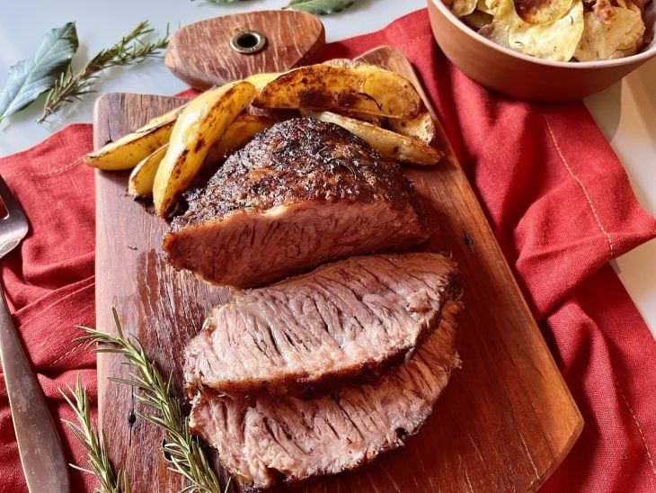
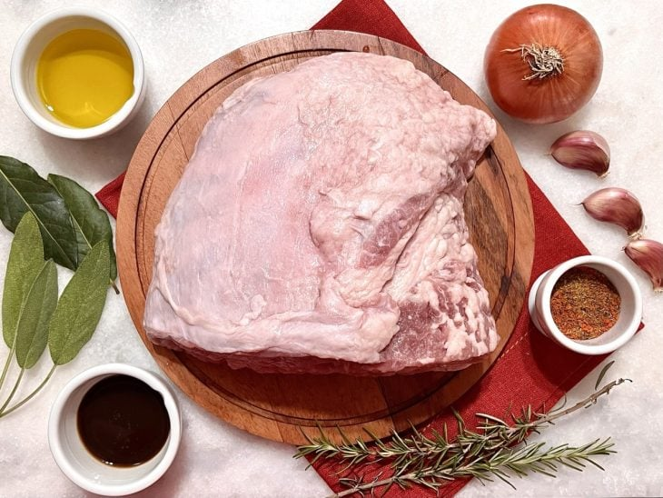
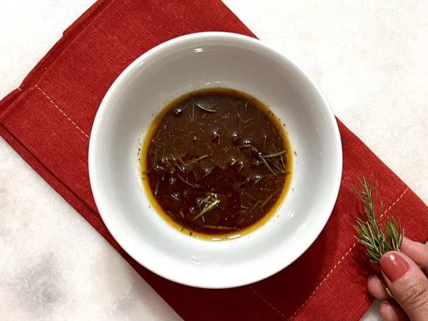
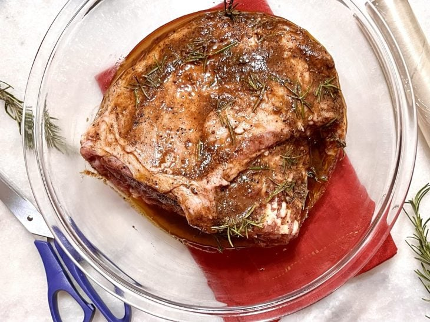
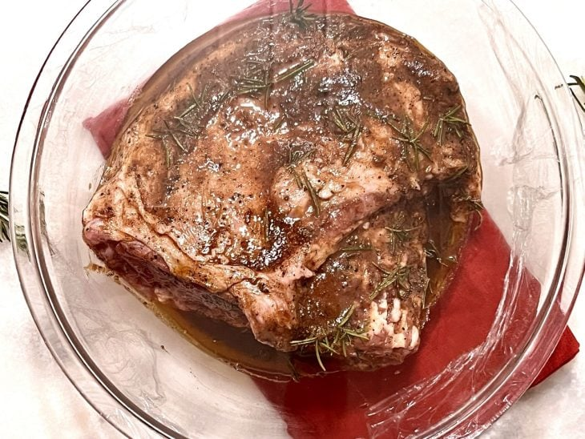
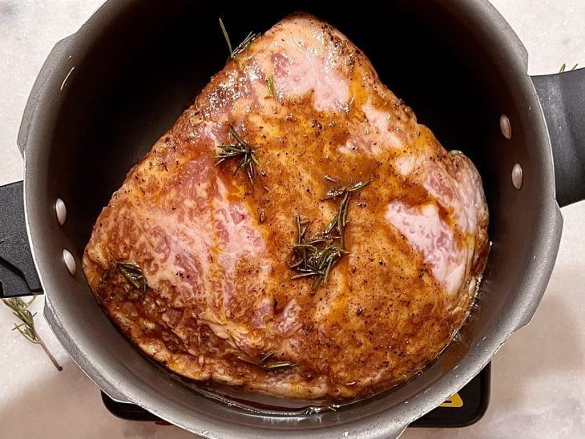
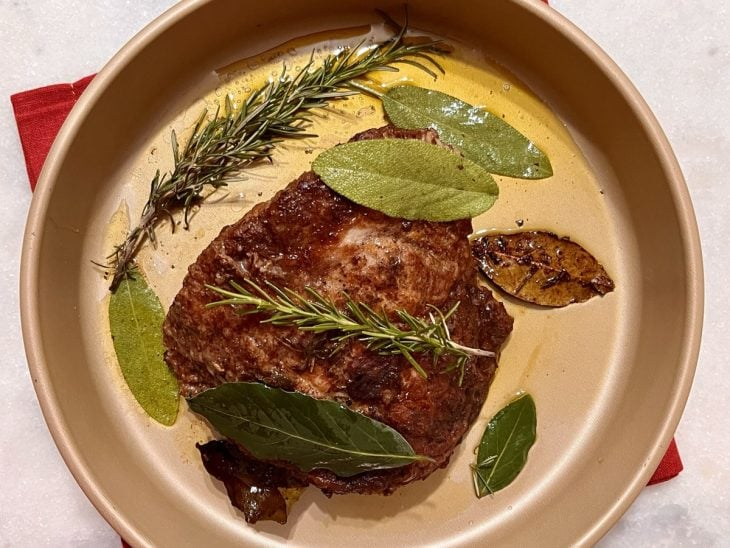
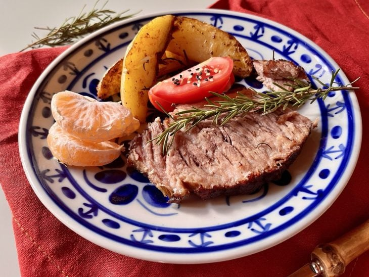

57 receitas com frango que são deliciosas e fáceis de preparar
42 receitas com peito de frango práticas e irresistíveis
32 receitas de filé de frango para variar o cardápio do dia a dia
10 receitas de fricassê de frango cremoso que fazem sucesso na mesa

Cupim assado
Ingredientes
Modo de preparo

Reúna todos os ingredientes da massa;

Em um recipiente, misture todos os ingredientes da marinada, exceto a carne, a folha de louro, a sálvia e o sal grosso;

Coloque a carne na marinada e incorpore bem, passando o molho por toda a extensão do cupim;

Leve a carne com a marinada na geladeira, coberta por tampa ou plástico filme, por no mínimo 3 horas ou de um dia para o outro;

Aqueça uma panela de pressão, adicione a carne, o louro, a sálvia e o sal grosso. Sele a carne dos dois lados, adicione 700 ml de água (fervente) e cozinhe, na pressão, por 40 minutos em fogo médio;

Espere a panela perder a pressão, transfira a carne para uma assadeira, cubra com papel alumínio, asse em forno preaquecido a 200 °C por 40 minutos;

Retire do forno, deixe descansar por 10 a 30 minutos e sirva. Bom apetite!
 57 receitas com frango que são deliciosas e fáceis de preparar
57 receitas com frango que são deliciosas e fáceis de preparar
 42 receitas com peito de frango práticas e irresistíveis
42 receitas com peito de frango práticas e irresistíveis
 32 receitas de filé de frango para variar o cardápio do dia a dia
32 receitas de filé de frango para variar o cardápio do dia a dia
 10 receitas de fricassê de frango cremoso que fazem sucesso na mesa
10 receitas de fricassê de frango cremoso que fazem sucesso na mesa